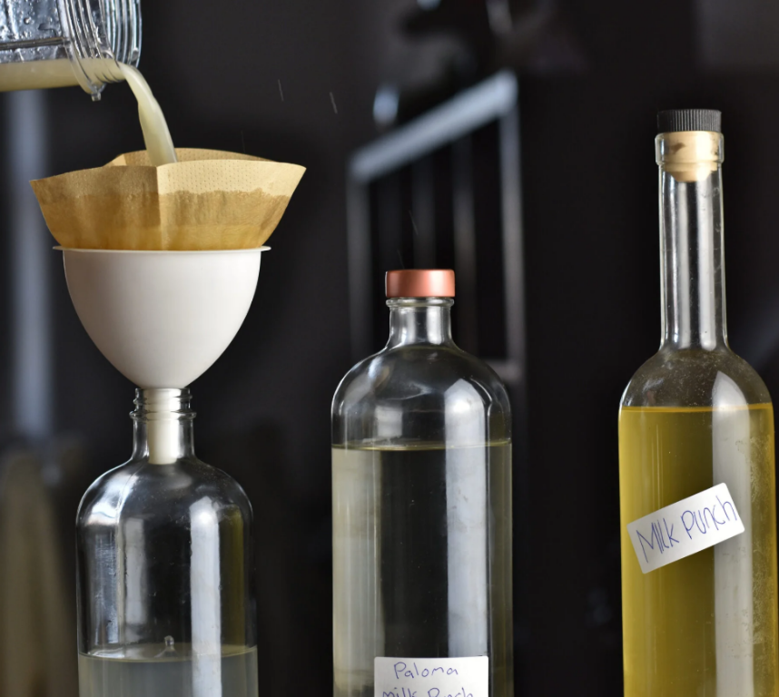
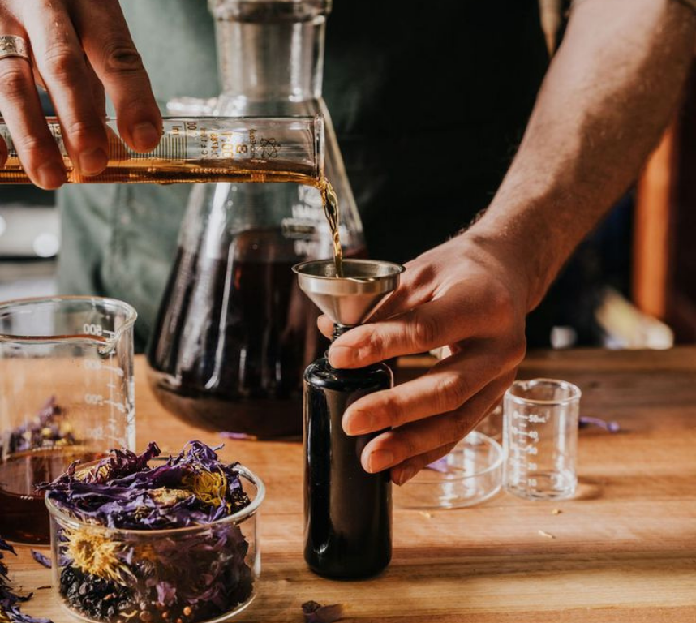
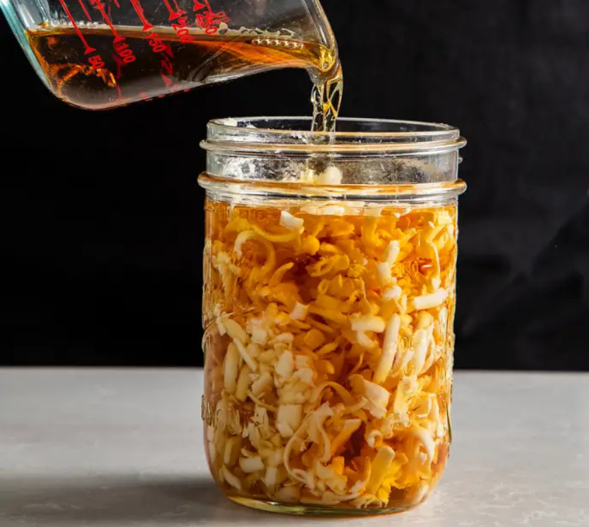
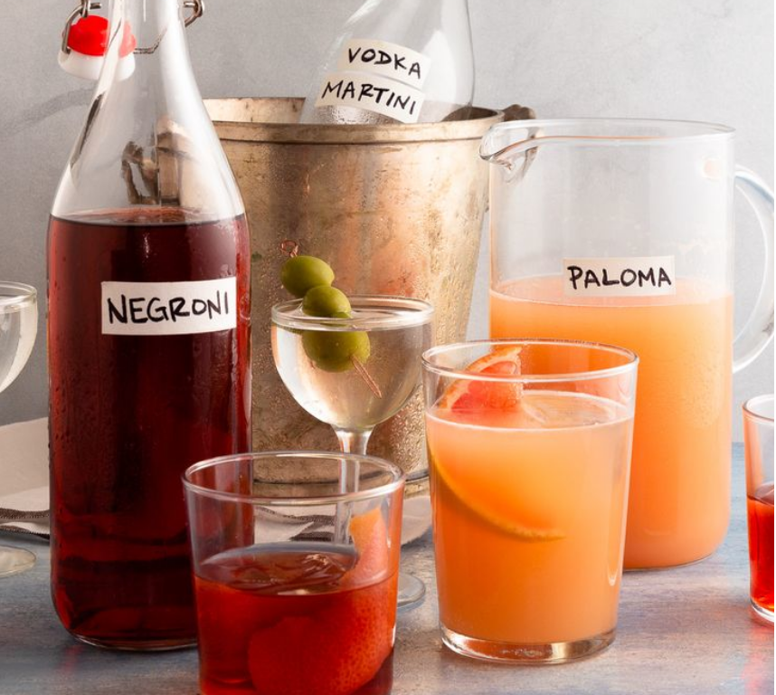

Techniques We Use
Every technique we apply has a reason — flavour, efficiency, consistency, or all three. These are the methods behind the work.

01
What It Is
Clarification is the process of removing solids, haze, or impurities from liquids to create clean, stable, visually clear ingredients and cocktails.
Why We Use It
Methods We Commonly Apply
Milk Clarification
Uses dairy proteins to filter and refine cocktails, creating clarity and a softer, rounder mouthfeel.
Agar Agar Clarification
A plant-based method for clarifying juices and infusions without altering flavour.
Natural Settling & Filtration
Time-based clarification for syrups, cordials, and house-made ingredients.
Centrifuge Alternatives
Practical, low-tech techniques that achieve professional results without expensive equipment.
Real-World Benefits
Clarification isn't just about aesthetics. It allows bars to:
Important Note
We don't apply clarification for the sake of trends — only when it improves flavour, efficiency, or stability within a program.
02
What It Is
Carbonation is the process of adding controlled CO₂ to liquids to create effervescence, lift aromas, and enhance texture.
Why We Use It
Methods We Commonly Apply
Force Carbonation
Controlled CO₂ infusion for cocktails, cordials, and non-alcoholic serves.
Pre-Batch Carbonation
Preparing sparkling cocktails in advance for high-volume service.
Rapid Carbonation Techniques
Efficient methods to carbonate ingredients without long waiting times.
Texture Balancing
Using carbonation to reduce perceived sweetness and sharpen flavours.
Real-World Benefits
Carbonation isn't just visual — it's operational. It helps bars to:
Important Note
We only carbonate when it genuinely improves the drink and service flow, never for gimmicks.

03
What It Is
Infusions and extractions are controlled ways of transferring flavour from one ingredient into another, creating custom house components.
Why We Use It
Methods We Commonly Apply
Cold Infusions
Slow, clean flavour extraction for delicate ingredients.
Hot & Rapid Infusions
Faster methods for bold flavours and high-volume prep.
Sous-Vide Extraction
Precise temperature-controlled infusions for repeatable results.
Tinctures & Aroma Sprays
Highly concentrated flavour tools for fine adjustments.
Real-World Benefits
Well-designed infusions allow bars to:
Important Note
Every infused ingredient is designed with service practicality and shelf life in mind.

04
What It Is
Fat washing is a technique used to add rich, savoury, or creamy characteristics to spirits by infusing them with fats and then removing the solids.
Why We Use It
Methods We Commonly Apply
Butter & Oil Fat Washing
Classic techniques for adding depth to spirits.
Nut & Dairy Fat Infusions
Adding natural creaminess and savoury character.
Aroma-Driven Fat Washing
Using fats to carry subtle aromatic qualities.
Clean Separation Techniques
Ensuring clarity and stability after infusion.
Real-World Benefits
Fat washing allows bars to:
Important Note
We use fat washing selectively, ensuring every application is practical for service and food-safety compliant.

05
What It Is
Shelf stability is about designing ingredients and systems that last longer, taste consistent, and remain safe throughout service.
Why We Use It
Methods We Commonly Apply
pH Balancing
Adjusting acidity for flavour and preservation.
Acid Adjusting
Creating stable citrus alternatives for batching.
Preservation Techniques
Extending life of syrups, cordials, and juices.
Efficient Batching Systems
Designing prep that supports high-volume service.
Real-World Benefits
Strong prep systems help venues to:
Important Note
Shelf stability is always balanced with flavour integrity and food safety standards.